Aerospace Engineering · Pusan National University, Busan, South Korea
I build things and then check whether they actually work — airframes I cut and glued
myself, and the interfaces that run on top of hardware. Below are the two projects I spent
2026 on.
Excellence Award — 2nd of more than 30 teams nationwide
PNU President’s Cup Creative Aircraft Competition · Aug 2026 · 8-person team · Team Box Box
A low-altitude reconnaissance aircraft that had to take off, fly a circuit, identify a ground
target from the air, pass through the gate matching that target, and land in a re-launchable
state — all under a 6 kg maximum takeoff weight.
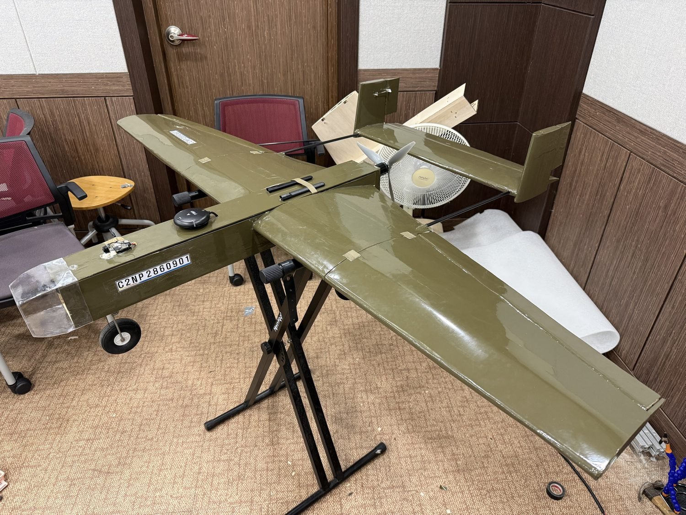
The finished aircraft — twin-boom, pusher, 1.71 m span, 3.5 kg.
What I did
I was responsible for airframe fabrication: turning the team’s drawings
into a structure that could survive flight while staying under weight.
Placed materials by stiffness requirement rather than uniformly — carbon-fiber pipe
for spars and booms, balsa where mass mattered more than rigidity, aircraft plywood at
load paths and joints.
Built a truss square-bulkhead fuselage, chosen so avionics could be laid
out and reached easily, and a semi-monocoque wing that kept wiring runs
simple without giving up stiffness.
Replaced the 3D-printed nose with a vacuum-formed plastic shell after the
printed part limited the camera’s field of view and left it exposed.
Final mass came in at 3.5 kg against a 6 kg limit, and the aircraft I
built flew.
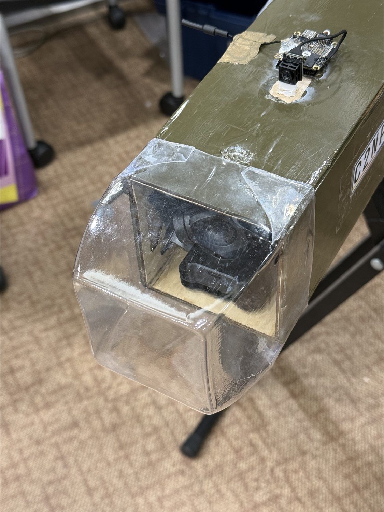
The vacuum-formed nose that replaced the 3D-printed one, so the camera could see out and stay protected.
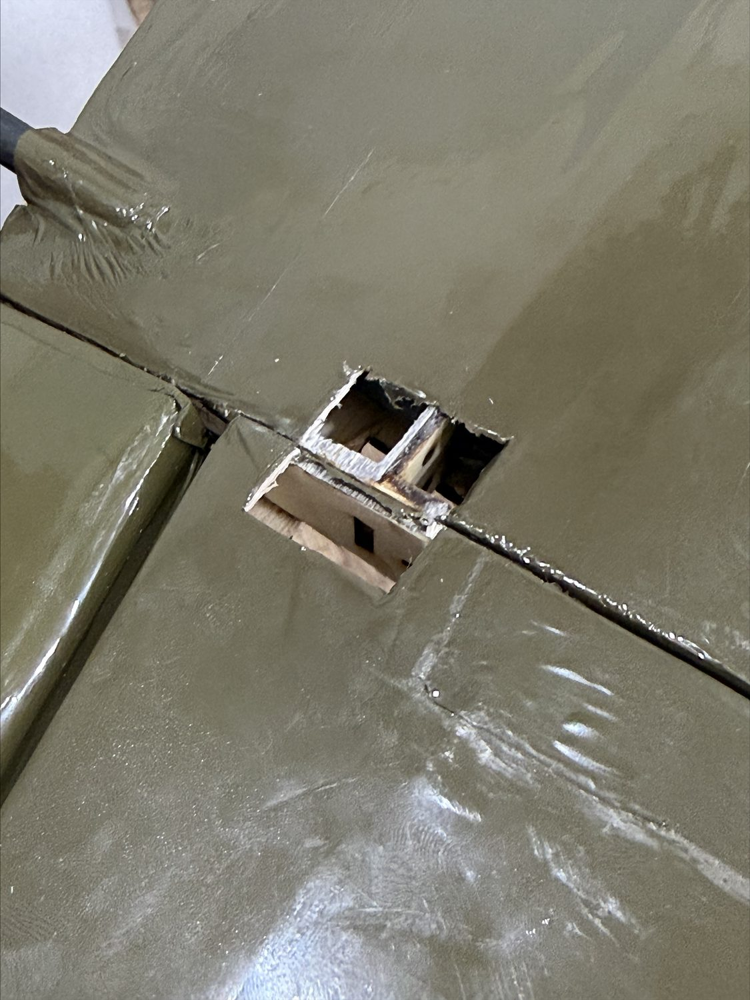
Wing and boom attachment — aircraft plywood at the load path, balsa everywhere it was not needed.
Airframe
Configuration
Twin-boom, pusher
Wingspan
1.71 m
Wing area
0.487 m²
Aspect ratio
6.0
Taper ratio
0.5
Airfoil
NACA 4412
Design mass
3.5 kg
Cruise speed
12 m/s
Cruise CL
0.8
Flight control
Pixhawk 6C
Root/tip chord 0.38 / 0.19 m · incidence +2° with −2° washout,
so the root stalls first and the ailerons keep authority · H-tail, NACA 0012
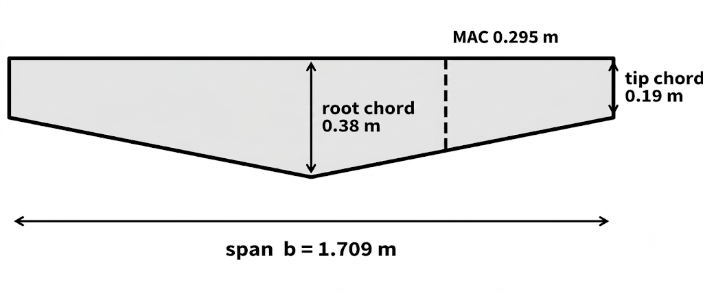
Wing planform — 1.709 m span, 0.38 m root chord tapering to 0.19 m.
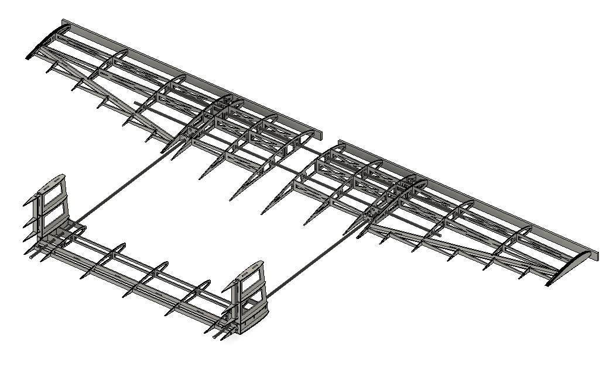
Internal truss framing, laid out so avionics could be reached after the skin went on.
Aerodynamics & stability
Geometry modelled in OpenVSP, coefficients from VSPAERO
vortex-lattice analysis at Re ≈ 2.3×105.
Target CL of 0.8 reached at about 6.2° angle of attack, well
inside the linear range — lift stays linear from −2° to 16°, leaving
stall margin in cruise.
Statically stable in pitch: centre of gravity at 0.528 m sits ahead of the
neutral point at 0.536 m.
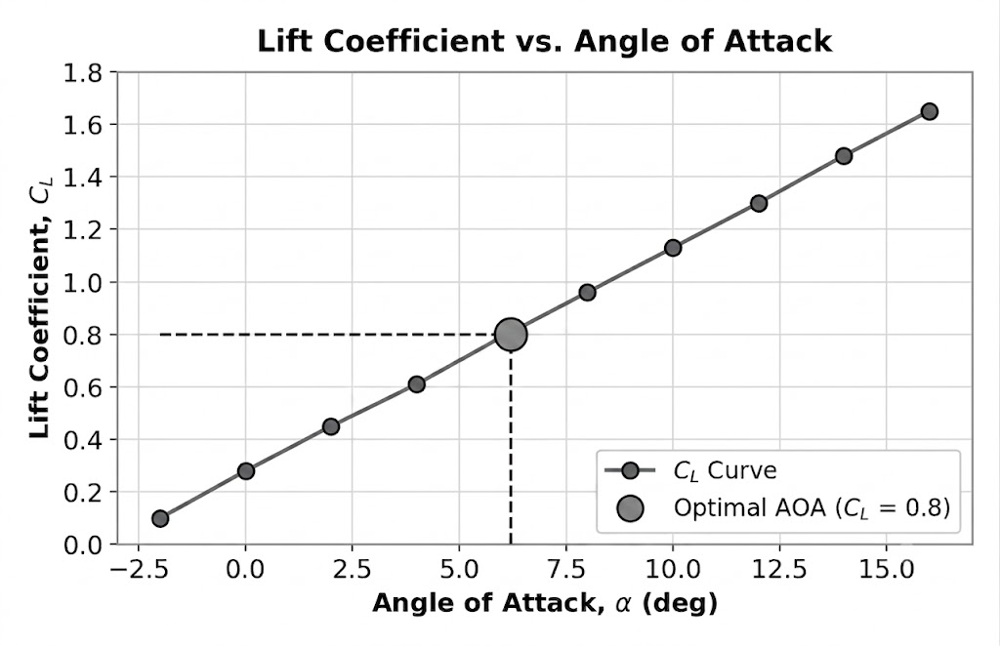
CL against angle of attack — the 0.8 design point sits at about 6.2°, inside the linear range.
Flight test
On 19 Aug 2026 the aircraft completed two full autonomous waypoint missions
(29 waypoints each) and transitioned to return-to-launch both times. Across the analysed
segment it held AUTO mode for 169.2 s (67.8% of the log), with 31–32 GPS satellites and
a maximum HDOP of 0.52.
From the onboard camera in flight, propeller and tail boom in frame.
Autonomy stack
The team extended a fixed preset mission into a bounded real-time route choice. A ground
laptop ran object detection (YOLO fine-tuned on Open Images, mAP50 0.711) and decided
left or right; a safety manager then checked that decision against an allow-list of two
approved waypoints before any MAVLink command reached the aircraft. Low confidence or a lost
link meant hold, never an improvised coordinate. Pixhawk and ArduPlane kept flight control
throughout — the AI only picked a branch.
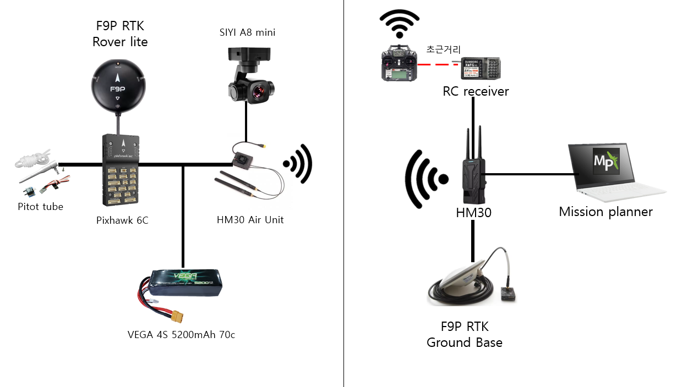
Onboard avionics and the ground link: Pixhawk 6C, F9P RTK, HM30 video and telemetry, gimbal camera.
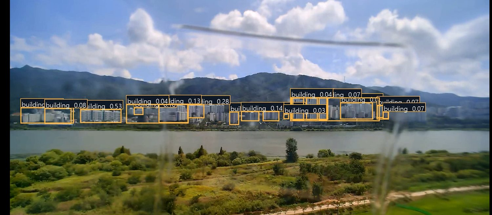
Detection running on the downlinked video — each box carries a class and a confidence score, and only a confident, matching class was allowed to pick a branch.
OpenVSP
VSPAERO
Composite & balsa fabrication
Vacuum forming
3D printing
Pixhawk / ArduPilot
Project 02
Battery-Life Coaching Interface for an AI Vacuum
Encouragement Award
Future AX Home Appliance Living Solution+ Project · Pusan National University
· Sep 2026 · Team Parasible
A robot vacuum shows you a battery percentage. It does not tell you the thing you actually
want to know: will this finish? So people start a run at 40%, the vacuum dies
halfway, and the whole cycle has to start over. We replaced the percentage with a verdict.
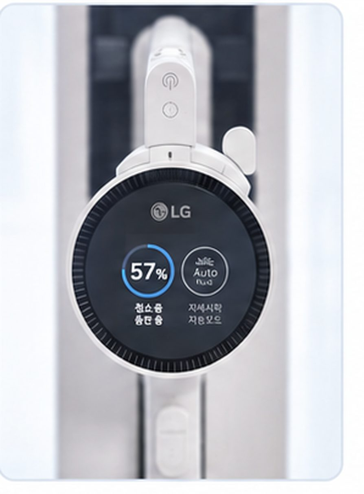
Before — 57%. True, and no help at all.
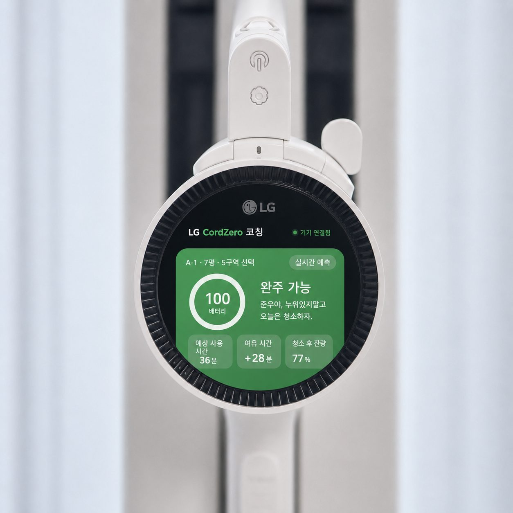
After — the same display, now answering the question the user actually has.
What I did
I owned the UX and UI design, and shipped the build the team demoed.
Designed the screens around the verdict rather than the number — the primary action
button itself changes with the answer, so the user is never left to do the arithmetic.
Designed the onboarding as seven everyday questions about the home
instead of a settings menu, saved as a reusable preset so nobody has to answer twice.
Kept one verdict readable across three very different surfaces — a phone screen, a
small device display, and a spoken line.
Deployed the final build to my personal GitHub, so the prototype could be
opened and used live rather than shown as slides.
Folded review feedback into the interface across revisions through to the final version.
How it decides
The interface computes margin = expected runtime − required cleaning time
and sorts every run into one of three verdicts at the +5 min and 0 min boundaries:
completable, tight, or needs a charge.
The action button changes with the verdict — start cleaning,
clean in quiet mode (buying margin), or charge first / reduce the area.
Every time the user changes the selected zones, the estimate recomputes.
Required cleaning time comes from seven onboarding questions about the home: floor area,
flooring type, pets, and preferred cleaning hours.
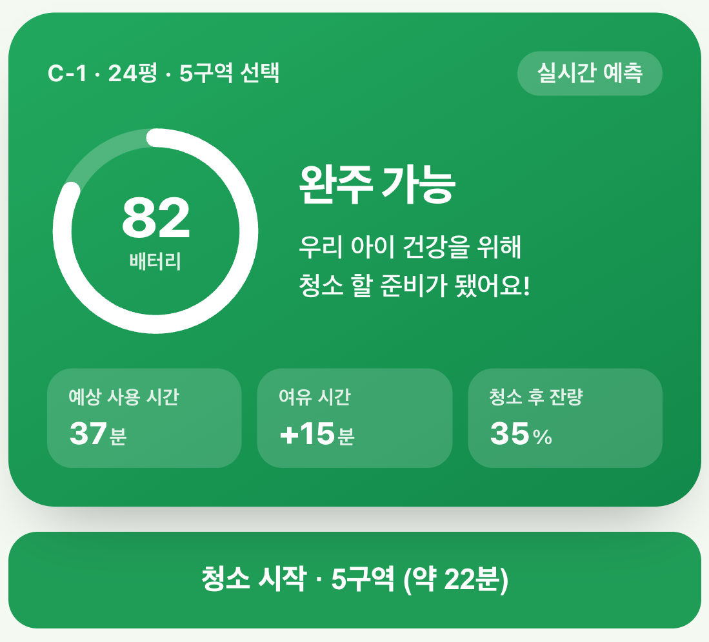
Completable — +15 min of margin, so the button simply starts the run.
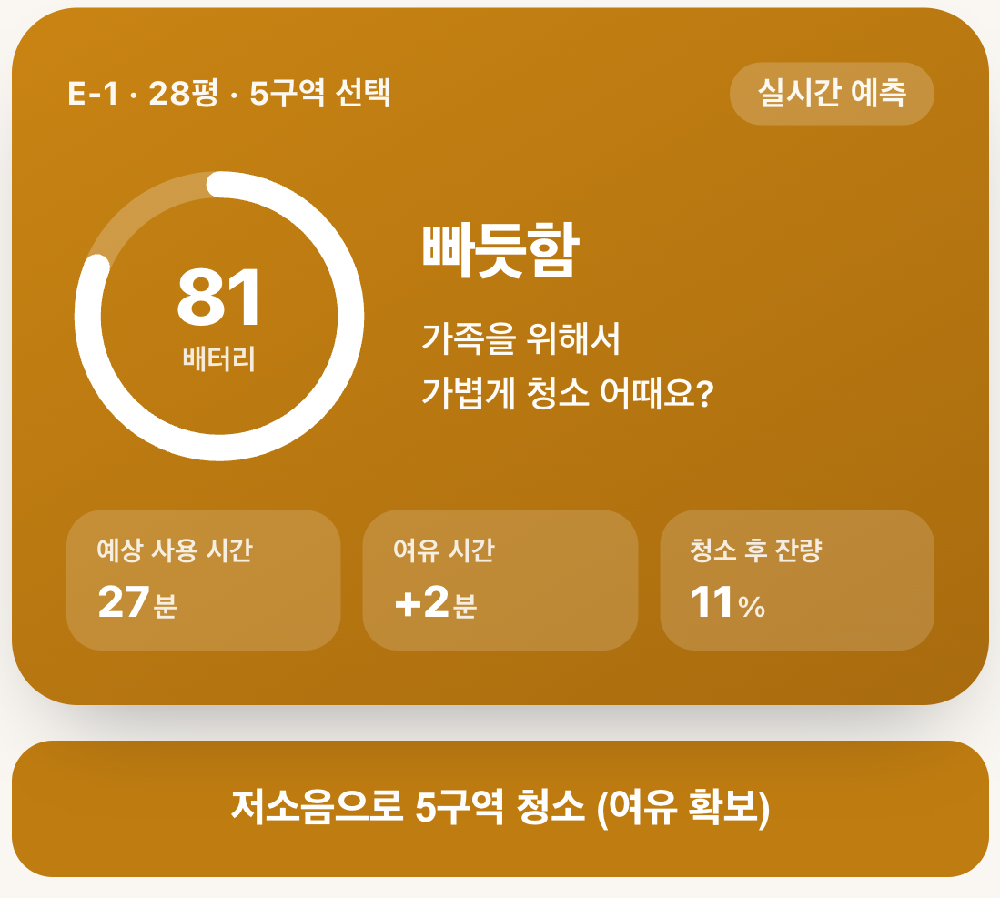
Tight — +2 min, so the button switches to quiet mode to buy margin.
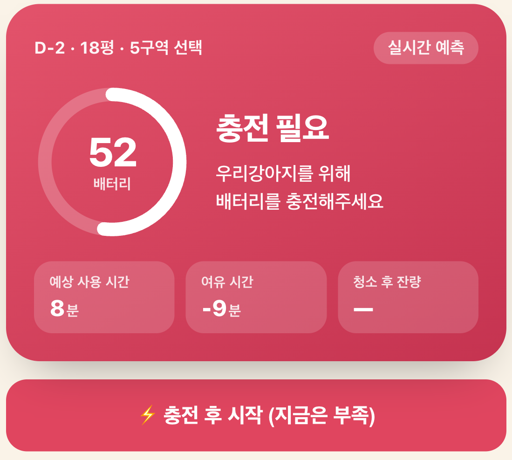
Needs a charge — −9 min, so the button offers charging or a smaller area.
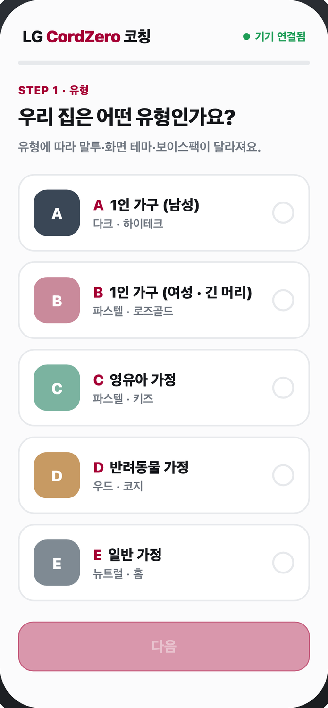
Onboarding — seven everyday questions instead of a settings menu, saved as a reusable preset.
Battery health, not just charge
The model separates state of charge from state of health.
At the same 82% charge, a new pack reads completable while a pack at 78% SOH reads
tight — the same number, a different answer. Below 80% SOH the interface starts
warning about replacement instead of silently under-delivering.
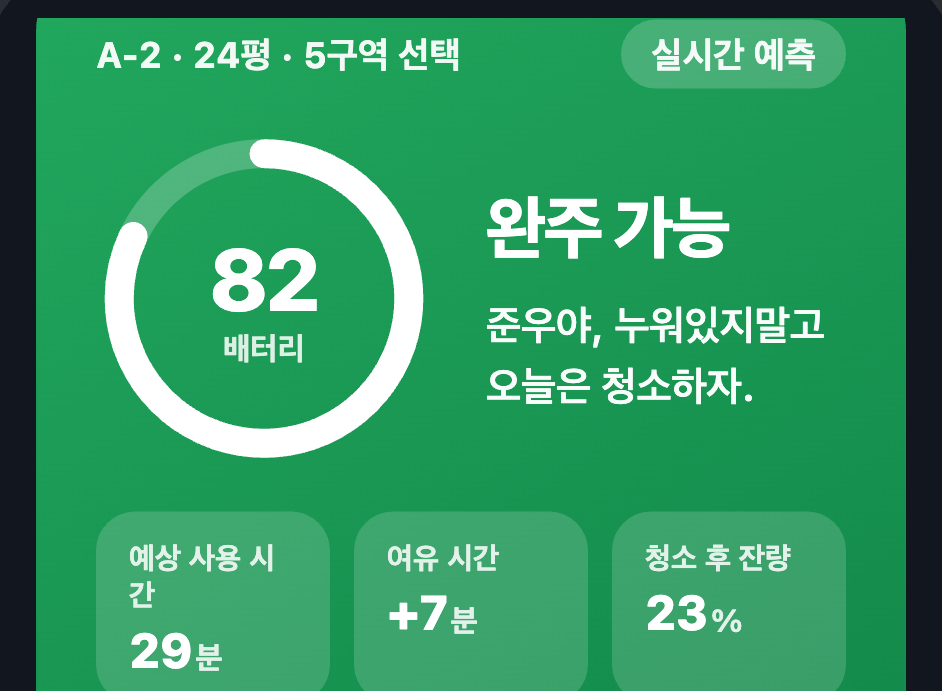
Healthy pack — 82% charge reads completable, +7 min.
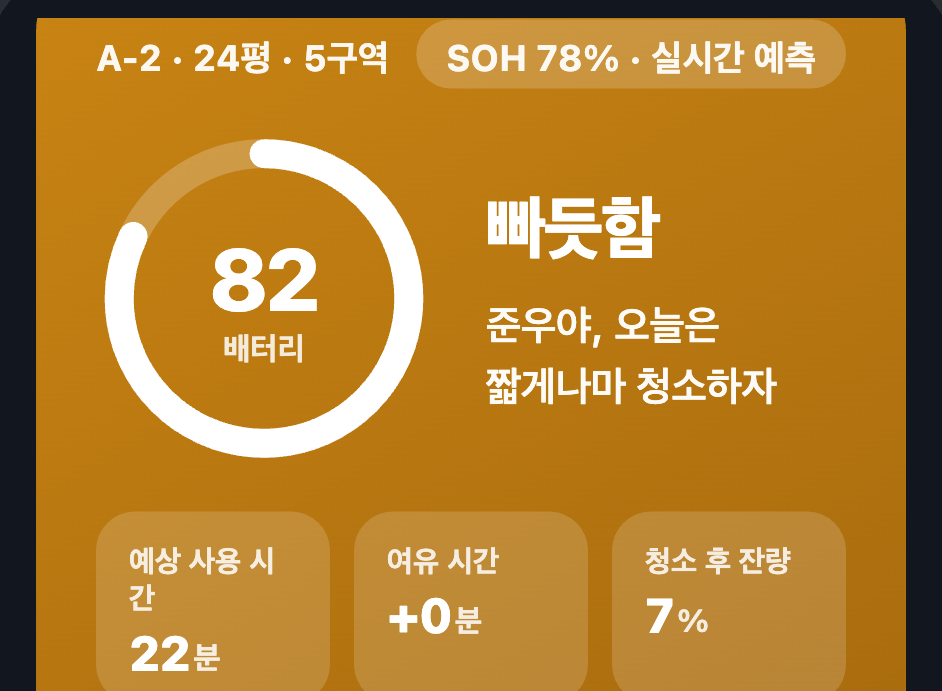
Same 82% charge at 78% SOH — now tight, +0 min. Same number, different answer.
One verdict, three channels
The same result appears in the phone app, on the device’s own display, and through a
voice assistant, so it is reachable without picking up a phone. Guidance is phrased for five
household profiles across ten usage patterns, and the system drops to silent, screen-only
output during late-night and nap hours.
Why the structure matters
Verdict logic, message text, and output channel are independent, so the same decision layer
ports to any battery-powered appliance and new phrasing or voices are a data addition rather
than a code change.
UX / UI design
Prototyping
Multi-channel interface
GitHub Pages deployment
Iterative revision
Background
Aviation experience
KUH-1 Surion helicopter crew chief, Republic of Korea Army
(Jun 2022 – Dec 2023) — 200 flight hours over 18 months of national service,
including aerial wildfire suppression, with daily pre-flight and onboard equipment
inspections alongside pilots and maintenance technicians.
Flight operations intern, Air Busan flight dispatch team
(Aug – Sep 2021).
Working with people from elsewhere
Peer mentor, International Student Buddy Program, PNU
(Mar 2024 – Aug 2025) — supported three exchange students one-on-one through
registration, campus life, and settling in.
Executive board member, English Discussion Club, PNU
(Mar 2025 – Aug 2025) — ran weekly English discussions for a club of more than
100 members.